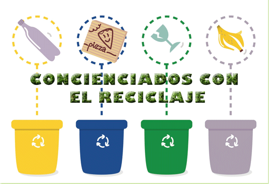

Como conocedor de saberes en cuanto al reciclaje, quisiera
poder ayudar a la comunidad que desconoce el como podría
reciclar, para que mi comunidad aumente el nivel de reciclaje.

Como cabeza de hogar, desearía poder tener comunicación con el
reciclador de mi zona, para que el reciclaje no se pierda con
la basura sino que él pudiera venir por el.